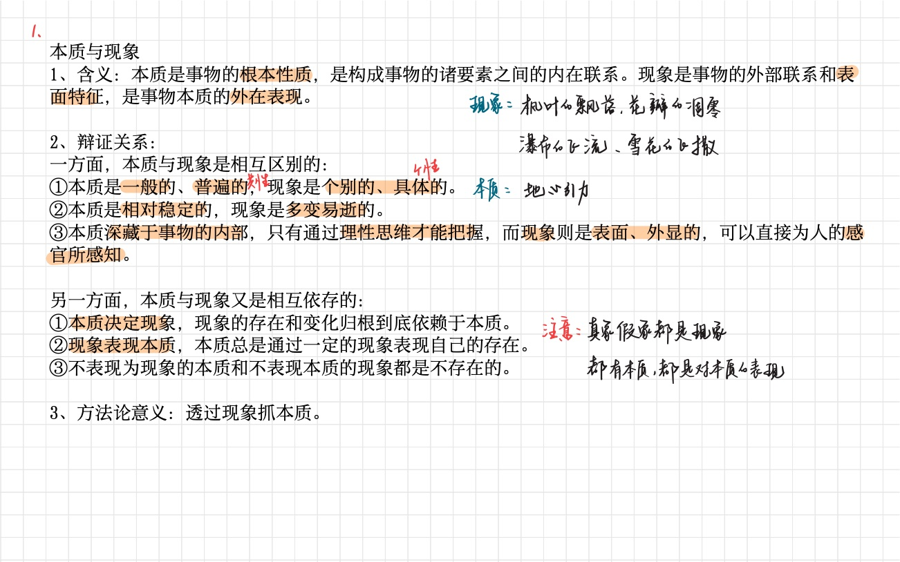
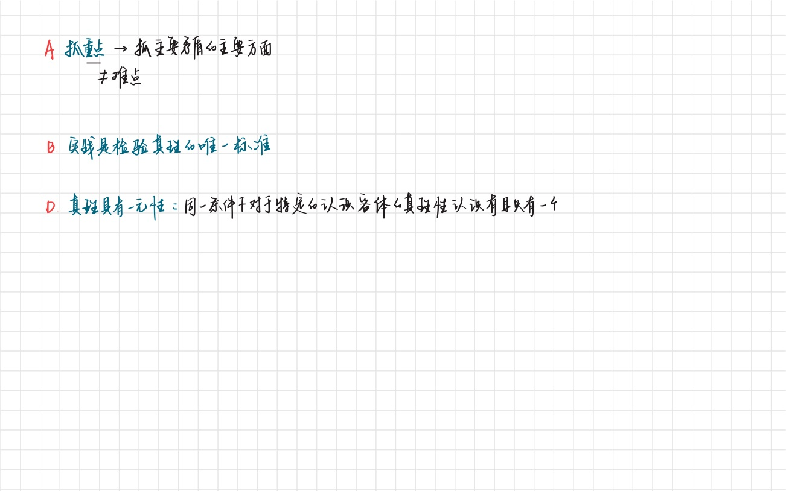

1题单选
视频已定位
本质与现象（事物的本质有一个逐渐暴露、逐渐展开的过程）
《X八第五套·单选精讲》0:00:07


题目原文
所谓非共识项目，通常是指在基础研究领域里，创新性强却还没有达成共识，争议大，难识别， 风险高的创新研究。这类研究项目通常难以通过专家评审程序，无法通过常规渠道获得资助。 2025年底，国家自然科学基金委员会完成首批重大非共识项目遴选。经过评选，有三个项目最终人选。国家自然科学基金委员会有关负责人表示，建立非共识项目筛选机制，推进非共识项目研究，将支持广大科研人员勇攀科学高峰，产出更多“从0到1”的原创成果。推进“非共识项目”研究，是因为